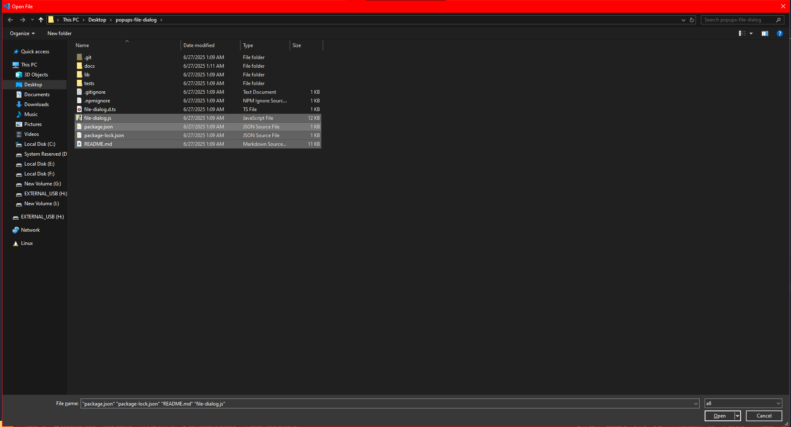

Popups File Dialog
Presentation


This is a simple file dialog library with 0 dependencies for Windows, Linux and macOS built on a C library called tinyfiledialogs.
Since it is built in C, this library is really fast, unlike any Python-based library I have seen on NPM.
Now listen, since Node.JS cannot natively open file dialogs, I created the CLI version of tinyfiledialogs. After that, I built this library as a wrapper for it.
I did consider making the tinyfiledialogs library a node addon, but that would have been too much work.
So I went the easy way, and made the CLP version of the library.
I recently built the lib for Windows and Linux.
I haven’t had the chance to download macOS and build the library for it yet.
So, if you have a computer running this OS and want to help me, feel free to contribute by compiling and testing the lib/vendors/src/cli.c on macOS.
There’s still a lot of work to do, so feel free to contribute to this lib in general, I can really use some help.
I am not a pro in C, so I am sure there are a lot of bugs in this lib.
API
View the documentation on https://abdelrahman-tarek-0.github.io/popups-file-dialog
~ thanks for Eliott Takvorian for creating the documentation for this lib.
Table of content
Demo
const fileDialog = require("popups-file-dialog");
(async () => {
const result = await fileDialog.openFile({
title: 'Open File',
startPath: './',
filterPatterns: ['*'],
filterPatternsDescription: 'all files',
allowMultipleSelects: true,
})
console.log(result);
})();
windows:
linux:

(async () => {
const result = await fileDialog.openDirectory({
title: "Message Box",
})
console.log(result);
})();
windows:

linux:

Installation
npm install popups-file-dialog
yarn add popups-file-dialog
git clone https://github.com/native-toolkit/popups-file-dialog.git
cd popups-file-dialog
Change log
1.7.3
- Improved error handling with new custom error classes:
NoSelectedFileError,NoSelectedDirectoryError, andNoSavedFileError - New and improved API documentation generated with JSDoc (shout-out to Eliott Takvorian)
1.6.0
- added the saveFile method
- fixed the startPath option for supporting directories with spaces in the name
- some formatting and refactoring
1.5.1
- add support for linux (finally)
- fixed some bugs (a lot of bugs)
- added the openDirectory method to select a folder
- some formatting and refactoring
Usage
const fileDialog = require("../file-dialog");
const main = async () => {
console.log(fileDialog.config.vendorPath); // check for the path of the vendor folder if the os is supported
const result = await fileDialog.openFile({
title: "Open File",
startPath: "C:\\Users\\",
filterPatterns: ["*.exe", "*.txt"],
filterPatternsDescription: "exe files,txt files",
allowMultipleSelects: true,
});
console.log(result);
const result2 = await fileDialog.messageBox({
title: "Message Box",
message: "Hello World",
dialogType: "yesNoCancel",
iconType: "info",
defaultSelected: "yes",
});
console.log(result2);
};
main();